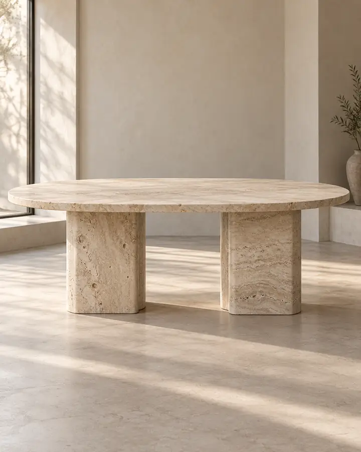
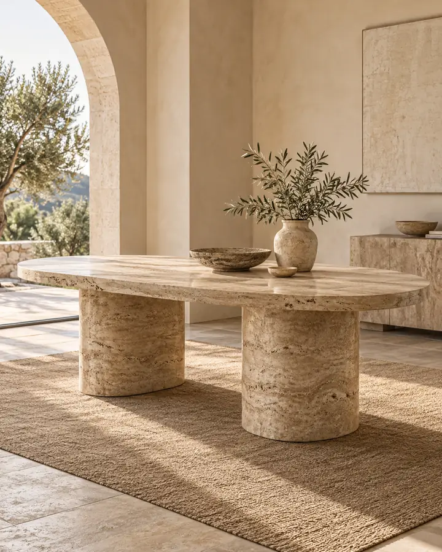

01 / COLECCIÓN CONCEPTUAL
Mesa de comedor ovalada
Tablero de piedra natural y dos apoyos escultóricos. Concepto de gran formato para espacios de reunión.
Valor de referencia estimado4.600 €
Comparación orientativa con mesas de alrededor de 210–240 cm. Ver comparable: Mesa de comedor ovalada en piedra (Terria)